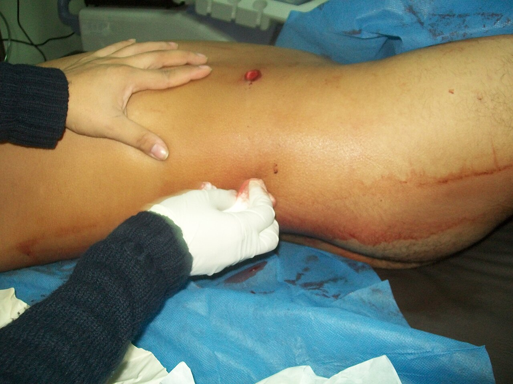
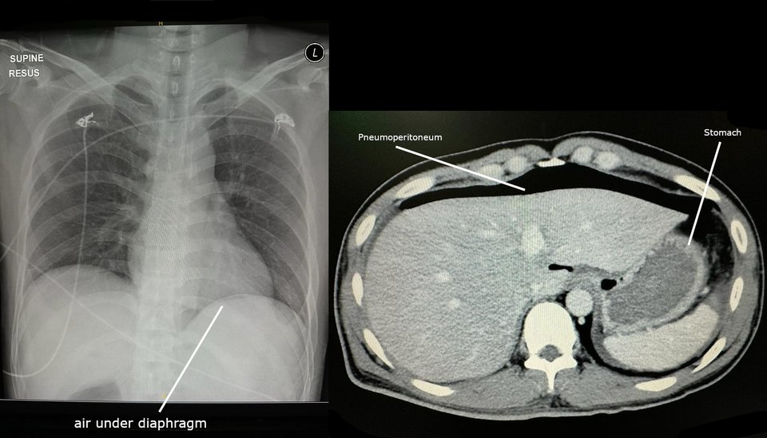

חבלת בטן חודרת
פצע ירי ופצע דקירה: מי הולך לחדר ניתוח מיד, איך מבררים את היציבים ומה עושים בתוך הבטן
בסוף המפגש תדעו
- להבדיל בין הגישה לפצע ירי בבטן לגישה לפצע דקירה
- לזהות את המטופל שצריך ניתוח בטן מיד
- להכיר את דרכי הבירור בפצע דקירה יציב: חקירת הפצע, בדיקות חוזרות, CT ולפרוסקופיה
- לתאר את שלבי ניתוח הבטן בטראומה ואת שלושת אזורי ה-retroperitoneum
- להסביר מתי עוצרים ב"ניתוח לשליטה בנזק" ומה זה בטן פתוחה
חבלת בטן במספרים
- שני דברים הורגים: דימום ונקב במעי עם זיהום
- פצע חודר חותך ישירות איברים מוצקים וחלולים: דימום וזליגת תוכן מעי שבדרך כלל צריכים תיקון בניתוח
- המעי הדק הוא מהאיברים הנפגעים ביותר בפצע חודר. הקיבה נפגעת ב-11–18% מהפצעים החודרים, ה-pancreas ב-4.4%
- לא כל פצע חודר חוצה את ה-peritoneum. כאן ההבדל בין ירי לדקירה מתחיל
פצע ירי: מחפשים את המסלול
- סופרים את כל הפצעים: גם בבית השחי, בקפלי העור, בפרינאום, בישבן ובקרקפת
- מסמנים כל פצע בסמן שנראה בצילום ומצלמים "מעור לעור", כולל הרקמות הרכות, כדי לשחזר את מסלול הקליע ולחפש אוויר חופשי
- חשבון זוגי: מספר הקליעים ועוד מספר הפצעים צריך לצאת זוגי. לא זוגי? מחפשים עוד קליע או עוד פצע
- בדיקת FAST בירי בבטן שנוי במחלוקת: חיובי תומך בניתוח, שלילי לא שולל דימום או פגיעה שצריכה ניתוח
- מטופל במצב קריטי שעוד שומר על נתיב האוויר: מחיים קודם ומצנררים בחדר הטראומה או בחדר הניתוח
- פיזיולוגיה תקינה: אפשר להמשיך ל-CT. ירי בגבול החזה-בטן: בודקים גם את החזה

מי הולך לחדר ניתוח מיד
- הלם או חוסר יציבות המודינמית
- פריטוניטיס
- אוויסצרציה (מעי או omentum בחוץ)
- אוויר חופשי בצילום חזה

הבירור תלוי במיקום הפצע
השגחה פעילה, לא "לחכות ולראות"
- בדיקות בטן חוזרות ומעקב סימנים חיוניים, המוגלובין ולויקוציטים
- מה מחייב ניתוח: פריטוניטיס, חוסר יציבות, ירידה משמעותית בהמוגלובין, עלייה בלויקוציטים
- 24 שעות בלי שינוי: מתחילים לאכול ושוקלים שחרור
- הגישה הזו דורשת צוות ומחלקה שיכולים לעקוב מקרוב. לא בכל מקום יש
- גם בירי: מטופל יציב עם פגיעה ב-liver נשקל קודם לטיפול בלי ניתוח. בלוס אנג׳לס הטיפול נכשל בכ-5% מפצעי הירי ב-liver
- פגיעה בחלול מתגלה לפעמים רק בשעות שאחרי ההגעה. ככל שמאחרים בניתוח, התמותה עולה
הפגיעה שקל לפספס
- פגיעה קטנה ב-diaphragm לא מסכנת חיים מיד, אבל בלי תיקון היא גדלה עם השנים והקיבה והמעי עולים לחזה (בקע סרעפתי ענק)
- במטופל יציב בלי פריטוניטיס, לפרוסקופיה עדיפה על CT לבד כדי לא לפספס
- בצד ימין ה-liver מגן והפגיעות כמעט לא מתגלות באיחור ולכן אפשר לשקול טיפול בלי ניתוח
- תיקון: ה-diaphragm גמיש ולכן כמעט תמיד אפשר לתפור ישירות בשכבה אחת של חוט שלא נספג
ניתוח בטן בטראומה: סדר קבוע
שלושה אזורים, החלטה אחת: בפצע חודר פותחים

👆 לחצו על אזור בציור כדי לקרוא עליו
aorta, IVC (inferior vena cava), תחילת כלי הדם של המעי ולידם ה-pancreas וה-duodenum. המטומה כאן נבדקת תמיד, גם בחבלה קהה. גישה ל-aorta מעל הכליות ול-left renal hilum: הזזת הקרביים השמאליים למרכז (Mattox). ל-IVC ולכלים מתחת לכליות: הזזת הקרביים הימניים (Cattell-Braasch)
הכליות וה-adrenal glands. בפצע חודר פותחים וחוקרים את ההמטומה. בחבלה קהה הכללים שונים ונדבר עליהם בשבוע 6
כלי הדם של האגן. בפצע חודר פותחים וחוקרים. בחבלה קהה ההמטומה כאן נובעת בדרך כלל משבר באגן ומשאירים אותה סגורה
מעי דק, מעי גס ו-rectum
- נקב קטן: ניקוי רקמה מתה ותפירה בשכבה אחת או שתיים, בלי להצר את החלל
- יותר מ-50% מהיקף הדופן, או כמה נקבים צמודים: כריתה והשקה
- קרע ב-mesentery עם אספקת דם פגועה: כריתה, גם בפגם קטן
- לא הרסני: תיקון ראשוני
- הרסני (מעל 50% מההיקף, חיתוך מלא, מקטע בלי דם): כריתה והשקה במטופל בריא
- עם יותר מ-6 מנות דם ומחלות רקע הדליפה הייתה 42% (לעומת 3%): שוקלים סטומה
- פגיעה הרסנית (מעל 25% מההיקף): הסטה, אילאוסטומיה או קולוסטומיה
- ניקוז פרה-סקרלי שגרתי לא מומלץ
- חוקן ניגודי אחרי כ-6 שבועות לפני סגירת הסטומה
קיבה, duodenum ו-pancreas
- 11–18% מהפצעים החודרים, תמותה 2.2%
- פריטוניטיס מופיעה מהר (תוכן חומצי)
- חובה לבדוק גם את הדופן האחורית דרך ה-lesser sac
- תיקון בשכבה אחת או שתיים, או בשדכן
- פחות מ-2% מפגיעות הבטן, כ-80% מירי, תמותה 24%
- רטרופריטונאלי: אין סימנים בבדיקה
- 98% אפשר לתקן ישירות, אחרי Kocher רחב ולכסות ב-omentum
- 4.4% מהפצעים החודרים. המסוכן הוא קרע ב-pancreatic duct (דרגה 3 ומעלה)
- צינור פגוע משמאל ל-SMV: כריתת pancreatic tail ונקז
- ב-pancreatic head: לרוב ניקוז בלבד. וויפל רק בפיזיולוגיה תקינה

לעצור לפני ששלישיית המוות מנצחת
- הבעיה: חלק מהמטופלים מתדרדרים בניתוח ארוך להיפותרמיה, קואגולופתיה וחמצת וכל אחת מחמירה את האחרות
- הפתרון: ניתוח קצר: עצירת דימום (כולל ריפוד), שליטה בזליגת מעי (תפירה או כריתה, המעי נשאר מנותק) וסגירה זמנית של הבטן
- מתקנים את הפיזיולוגיה בטיפול נמרץ וחוזרים לחדר הניתוח בדרך כלל אחרי 24–48 שעות (לא יותר מ-48) לתיקון הסופי
- במחקר של Rotondo (46 מטופלים עם פצע חודר בבטן): בפגיעה בכלי דם גדול ועוד שני איברים ומעלה, הישרדות 77% לעומת 11%
- שימוש יתר מזיק: עוד ניתוחים, בקע, פיסטולה, הנשמה ממושכת ועיכוב בהזנה
- לחץ סיסטולי מתחת ל-90
- חום גוף מתחת ל-34°
- pH מתחת ל-7.2 או לקטט מעל 4
- INR או PT/PTT יותר מפי 1.5, או דימום מפושט שרואים
- יותר מ-10 מנות דם, צורך בריפוד הבטן
- ניתוח צפוי ליותר מ-90 דקות, איבוד דם מעל 4 ליטר
הבטן הפתוחה ותסמונת המדור הבטני
- סגירה זמנית: יריעת פלסטיק מעל המעי ומעליה ספוג בוואקום. מונעת הידבקות לדופן ומאפשרת להחזיר את הדופן בניתוח הבא
- ואקום יחד עם תפרים שמונעים את נסיגת הפציה: סגירה ביותר מ-90%
- חוזרים לחדר ניתוח מוקדם יותר כשהעירויים פוחתים, הלקטט משתפר ותרופות כלי הדם יורדות
- תסמונת מדור: בטן תפוחה, לחץ דם נמוך, לחצי הנשמה גבוהים ומיעוט שתן
- מודדים לחץ בשלפוחית כל 4 שעות בסיכון. בניתוח עם יותר מ-10 מנות דם או יותר מ-15 ליטר נוזלים, משאירים את הבטן פתוחה
- הטיפול בתסמונת: פתיחת הבטן. עד 20% חוזרים על התסמונת גם עם בטן פתוחה
פחות ניתוחים מיותרים
62% ירי, 38% דקירה. טיפול בלי ניתוח ניתן ל-61% מהדקירות ול-29% מהירי והצליח ב-93% בשתי הקבוצות. הבדיקה הקלינית קבעה נכון את הצורך בניתוח ב-91–92%
Sander A et al. Ann Surg 2022;275(2):e527-33256 פצועי דקירה: 18% נותחו מיד, 83% מהנותרים טופלו בלי ניתוח. רק 3 (2%) נכשלו וכולם בתוך 24 שעות. המסקנה: 24 שעות השגחה צמודה לפני שחרור
Owattanapanich N et al. J Trauma Acute Care Surg 2022;93(5):639-4342% נבחרו להשגחה. 4% נזקקו לניתוח מאוחר ורק ב-0.3% היה סיבוך שאולי נבע מהעיכוב. ניתוח שגרתי לכולם היה מיותר אצל 47%
Velmahos GC et al. Ann Surg 2001;234:395-403המלצה לטובת לפרוסקופיה על פני CT לאבחנה, השגחה בפצע חודר בצד ימין ותיקון דרך הבטן בפגיעה חריפה
McDonald AA et al. J Trauma Acute Care Surg 2018;85:198-207חמישה דברים לקחת למחלקה
- הלם, פריטוניטיס, אוויסצרציה או אוויר חופשי: לחדר ניתוח מיד, בירי ובדקירה
- בירי: סופרים פצעים וקליעים, מסמנים ומצלמים מעור לעור. יציב? CT
- בדקירה יציבה: הבירור לפי המיקום ו-24 שעות של בדיקות חוזרות לפני שחרור
- ניתוח בטן בטראומה: עוצרים דימום, אחר כך זיהום ועוברים על הכול באותו סדר. בפצע חודר פותחים את שלושת אזורי ה-retroperitoneum
- פיזיולוגיה מתדרדרת? ניתוח קצר לשליטה בנזק, טיפול נמרץ וחזרה אחרי 24–48 שעות